Ouderwets met de hand gebakkenpannenkoeken.
Het gezelligste pannenkoekenhuis in de binnenstad van Amersfoort. Meer dan 100 pannenkoeken, zoet en hartig, binnen of buiten in de zon op ons terras.
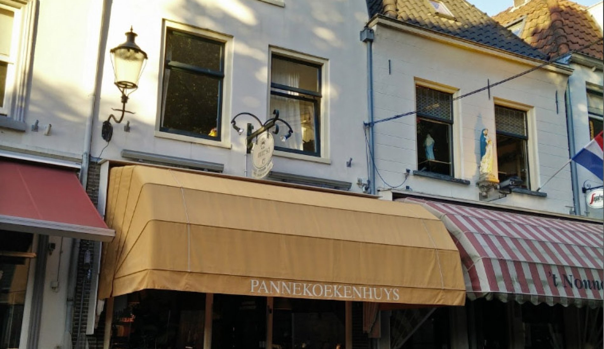
Zin in pannenkoeken?
De receptuur van onze pannenkoeken is traditioneel, en we bakken ze al sinds 1979 "ouderwets" met de hand. Een perfecte plek om overheerlijke pannenkoeken te eten: binnen, of buiten in de zon op ons terras aan de Groenmarkt.
Wij bakken standaard met eierbeslag, maar u kunt ook kiezen voor volkoren beslag. Daarnaast houden we rekening met veel allergie- en dieetwensen, zoals gluten- en lactosevrij beslag. Staat uw keuze er niet tussen? Vrijwel alle ingrediënten zijn te combineren, en de pannenkoeken kunnen ook zelf samengesteld worden.
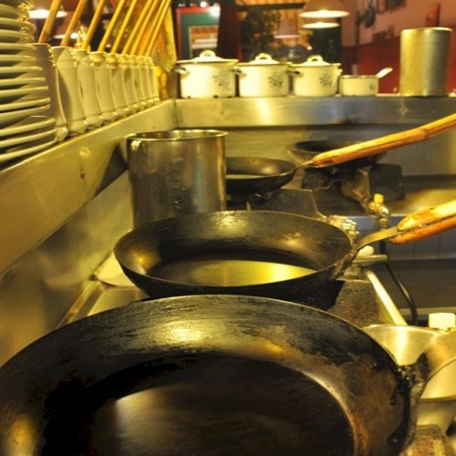
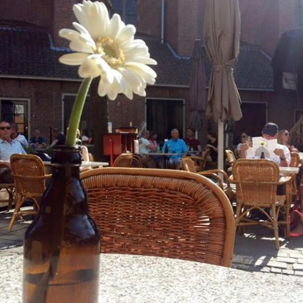
Wat eten jullie vandaag?
Naast de kaart hebben wij vaak ook andere lekkere dingen. Vraag het aan onze collega's.

Een kleine eter? Van elke pannenkoek kunnen wij een kleiner formaat bakken. Vrijwel alle ingrediënten zijn te combineren, vraag hier gerust naar.
Kleine pannenkoek
7,00- Met stroop of poedersuiker
Pannenkoek met
8,00- Poedersuiker
- Stroop
Pannenkoek met
9,00- Bruine suiker
- Chocoladesaus
Pannenkoek met
11,00- Ananas
- Rozijnen
- Chinese gember
- Appel, kaneel en poedersuiker
- Banaan
- Spek
- Ham
- Kaas
- Grand Marnier
Pannenkoek met
13,00- Boerenjongens
- Rozijnen en ananas
- Appel en ananas
- Appel en gember
- Appel en rozijnen
- Appel en walnoot
- Appel en Grand Marnier
- Kaas en champignon
- Kaas en tomaat
- Kaas en ui
- Kaas en rozijnen
- Kaas en chorizo
- Kaas en ananas
- Kaas en gember
- Spek met champignon
- Spek en rozijnen
- Spek en kaas
- Spek en appel
- Ham en ananas
- Ham en kaas
- Ham en spek
- Banaan en rozijnen
- Banaan en kaas
- Banaan en appel
- Banaan en rum
- Banaan en Grand Marnier
Pannenkoek met
15,00- Spek, kaas en ananas
- Spek, kaas en champignon
- Spek, ham en champignon
- Spek, ui en kaas
- Spek, tomaat en kaas
- Spek, appel en rozijnen
- Spek, appel en ananas
- Ham, kaas en ananas
- Ham, kaas en champignon
- Ham, kaas en tomaat
- Appel en boerenjongens
- Appel, rozijnen en walnoot
- Banaan, appel en ananas
- Banaan, appel en Grand Marnier
- Banaan, kaas en rozijnen
- Banaan, kaas en ananas
- Kaas, ui en champignons
- Kaas, champignon en walnoot
- Kaas, chorizo en champignon
- Kaas, ui en paprika
- Kaas, chorizo en ananas
Pannenkoek met
16,00- Kaas, ui, paprika en champignon
- Appel, boerenjongens en walnoot
- Banaan, appel en boerenjongens
- Kaas, champignon, walnoot en honing
- Spek, kaas, chorizo en champignon
Regelmatig hebben wij, naast onze kaart, ook andere specialiteiten. Let op de aankondigingen in de zaak. Dieetwensen, zoals lactosevrij beslag? Vraag het personeel naar de mogelijkheden.
Groenmarkt Speciaal
15,00Met spek, ui, champignons en shaslicksaus
Athener pannenkoek
15,00Appel, walnoot en honing
Italiaanse pannenkoek
16,00Tomaat, ui, Italiaanse kruiden en geraspte kaas
Papricorn pannenkoek
16,00Spek (of chorizo of kaas), maïs, paprika en knoflook
Groenmarkt extra
16,00Spek, ui, champignons, kaas of ham en shaslicksaus
Holle Bolle Gijs
16,50Spek, ui, tomaat, champignons, geraspte kaas en shaslicksaus
Kaatje
16,50Spek, ham, ui, champignons, geraspte kaas en shaslicksaus
Geitige pannenkoek
16,50Spek, geitenkaas, walnoot en honing
Le Français
16,50Spek, brie, rucola
Vlam in de pannenkoek
17,00Chorizo, tomaat, ui, champignons, geraspte kaas en een zeer pittige hotsaus
Pescadori pannenkoek
17,50Zalm, zongedroogde tomaatjes, rode ui, prei en roomkaas
Italiaan extra
17,50Tomaat, ui, zwarte olijven, champignons, Italiaanse kruiden en geraspte kaas
Kip Kerrie pannenkoek
18,50Pittig gekruide kip, sla en chilisaus
Kipshoarma pannenkoek
18,50Gekruide kipshoarma, sla en knoflooksaus
Spicy Taco
18,50Gekruid gehakt, maïs, paprika, geraspte kaas en sriracha-saus
Fajita pannenkoek
18,50Mexicaans gekruide ossenhaaspuntjes, paprika, tomaat, ui en guacamole
Kippenlever pannenkoek
18,50Kippenlevertjes, spek, ui, champignon, sla, ananas, tomaat en knoflooksaus
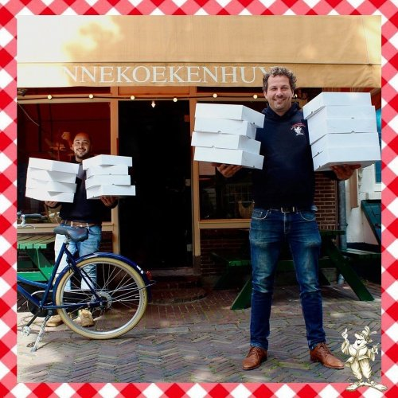
Ook om af te halen
Liever lekker thuis op de bank een pannenkoek eten? Bel ons van tevoren, of loop bij ons binnen op de Groenmarkt. Dan maken wij ze direct voor je klaar.
Reserveren
Online reserveren kan al vanaf 1 persoon, tot en met 8 personen.
- Met een grotere groep? Bel ons even op 033 462 1777.
- Vragen of iets bijzonders? Mail naar info@potsenmaeker.nl.
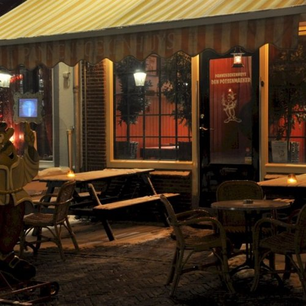
Wil je ons ook op je feestje?
Naast ons pannenkoekenhuis op de Groenmarkt bakken wij sinds 2008 pannenkoeken op festivals en evenementen. Dat begon met een paar festivals per jaar en groeide uit tot een vaste onderneming: Firma Geflipt. Met onze mobiele pannenkoekenkeukens brengen we de geur van versgebakken pannenkoeken naar elk soort evenement. Of je nu 50 hongerige gasten op een verjaardag wilt verrassen of een festivalweide van duizenden bezoekers: wij kunnen het!
Afgelopen jaren stonden we onder meer op:
- Into the Woods
- Bevrijdingsfestival Utrecht
- Mysteryland
- Wildeburg
- Festival de Beschaving
- Foodfestival Lepeltje Lepeltje
- Fringe World Festival, Australië
Onze pannenkoeken zijn sinds 2004 zelfs in Australië te proeven, op het Fringe World Festival in januari en februari. Maar u kunt ons ook inhuren voor kleinere evenementen, zoals een familiefeest of straatfeest.
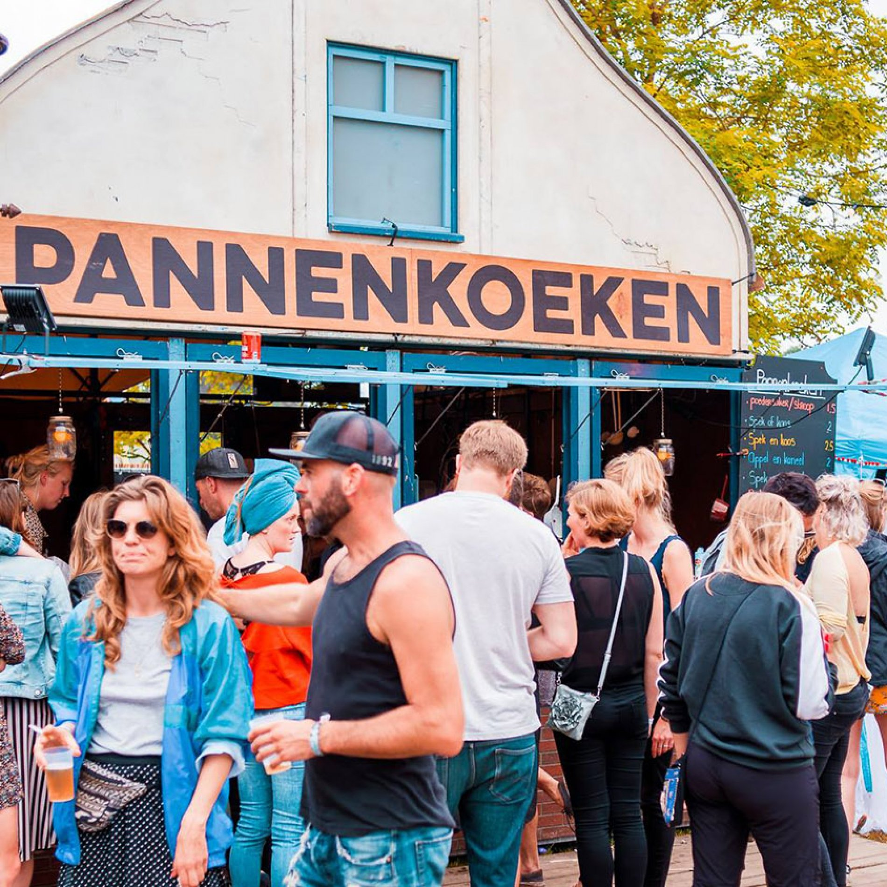
Ons wagenpark
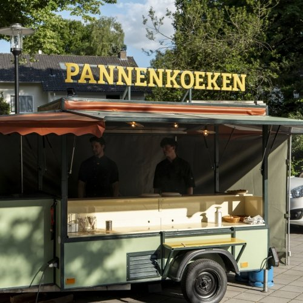
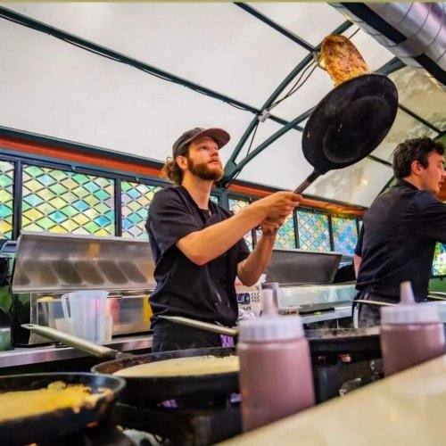
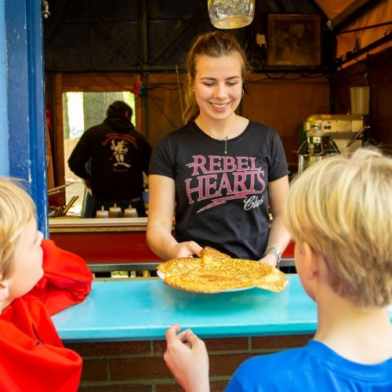
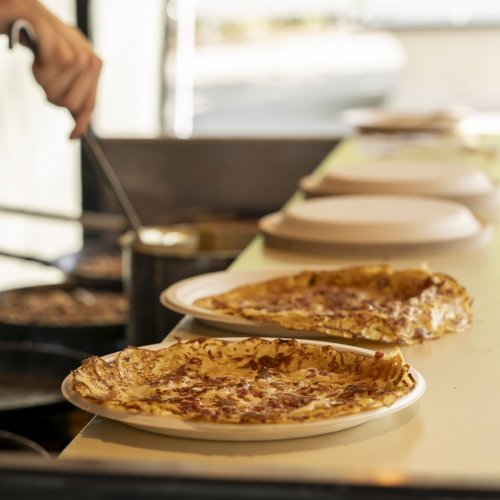
Groenmarkt speelt buiten
Elke vrijdag en zondag live muziek!
Ieder jaar hebben wij van juni tot en met september, bij lekker weer, live muziek bij ons op het plein. In de zomer vinden er op de Groenmarkt bovendien vele activiteiten plaats, waaronder kindervoorstellingen en muziekprogramma's.
Houd onze social media in de gaten als je wilt weten wie er speelt.
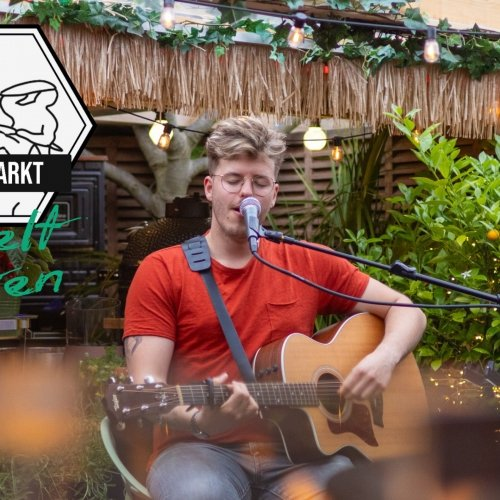
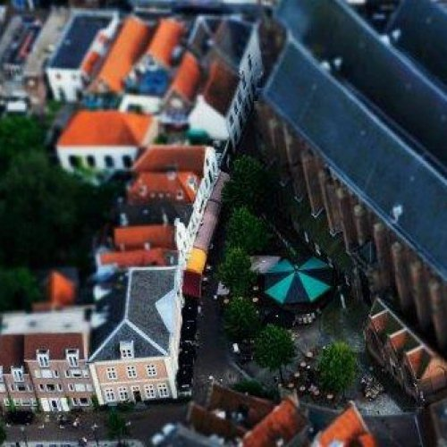
Impressie
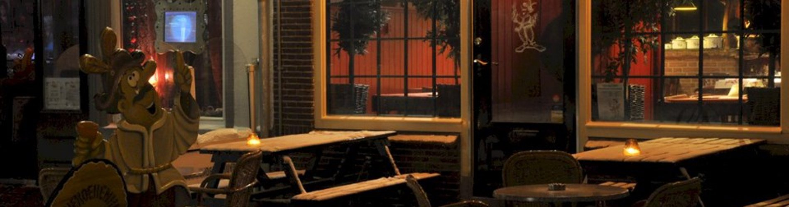
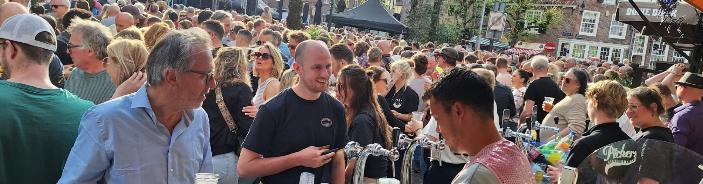
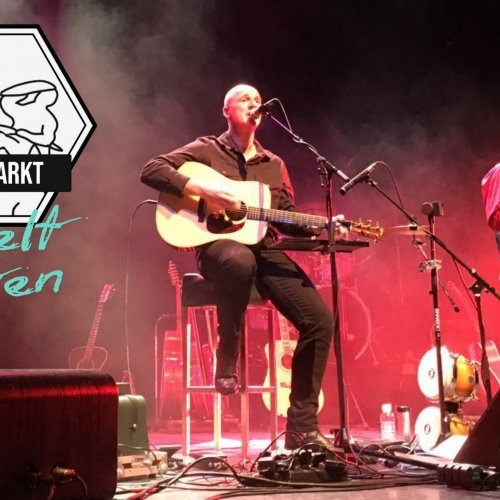
Neem gerust contact op
Openingstijden
| Maandag t/m vrijdag | vanaf 17:00 |
| Zaterdag en zondag | vanaf 12:00 |
De keuken is open tot 20:00.
Tijdens schoolvakanties
| Maandag en dinsdag | 17:00 tot 20:00 |
| Woensdag t/m zondag | 12:00 tot 20:00 |
Bereikbaarheid
Ons pannenkoekenhuis ligt in de autoluwe binnenstad van Amersfoort en is daardoor slecht bereikbaar met de auto.
Parkeren kan bij parkeergarage Flintplein (5 minuten lopen) en bij Q-Park Beestenmarkt (6 minuten lopen).